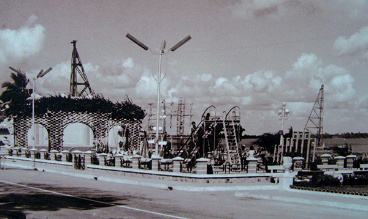

Vị trí địa lý
Thành phố Cần Thơ nằm ở vùng hạ lưu của Sông Mê Kông và ở vị trí trung tâm đồng bằng sông Cửu Long, nằm cách Thành phố Hồ Chí Minh 169 km, cách thành phố Cà Mau hơn 150 km, cách thành phố Rạch Giá gần 120 km, cách biển khoảng hơn 80 km theo đường nam sông Hậu (quốc lộ 91C)
Cần Thơ có tọa độ địa lý 105°13’38" – 105°50’35" kinh độ Đông và 9°55’08" – 10°19’38" vĩ độ Bắc, trải dài trên 60 km dọc bờ Tây sông Hậu.
Phía bắc giáp tỉnh An Giang, phía đông giáp tỉnh Đồng Tháp và tỉnh Vĩnh Long, phía tây giáp tỉnh Kiên Giang, phía nam giáp tỉnh Hậu Giang. Diện tích nội thành là 53 km².
Thành phố Cần Thơ có tổng diện tích tự nhiên là 1.409,0 km², chiếm 3,49% diện tích toàn vùng và dân số vào khoảng 1.400.200 người, mật độ dân số tính đến 2015 là 995 người/km². Cần Thơ là thành phố lớn thứ năm của cả nước, cũng là thành phố hiện đại và lớn nhất của cả vùng hạ lưu sông Mê Kông.
Thành phố Cần Thơ có các điểm cực sau:
- Cực Bắc là phường Thới Thuận, quận Thốt Nốt.
- Cực Tây là xã Thạnh Lợi, huyện Vĩnh Thạnh.
- Cực Nam là xã Trường Xuân A, huyện Thới Lai.
- Cực Đông là phường Tân Phú, quận Cái Răng
Khí hậu
| Dữ liệu khí hậu Cần Thơ | |||||||||||||
| Tháng | 1 | 2 | 3 | 4 | 5 | 6 | 7 | 8 | 9 | 10 | 11 | 12 | Năm |
|---|---|---|---|---|---|---|---|---|---|---|---|---|---|
| Cao kỉ lục | 34.2 | 35.2 | 38.5 | 40.0 | 38.3 | 37.3 | 36.8 | 35.5 | 34.8 | 35.8 | 34.2 | 34.0 | 40.0 |
| Trung bình cao | 30.0 | 30.9 | 32.5 | 33.4 | 32.9 | 31.6 | 31.1 | 30.7 | 30.7 | 30.5 | 30.2 | 29.3 | 31.1 |
| Trung bình ngày | 25.2 | 25.9 | 27.1 | 28.3 | 27.7 | 27.0 | 26.7 | 26.6 | 26.6 | 26.7 | 26.6 | 25.4 | 26.6 |
| Trung bình thấp | 22.1 | 22.6 | 27.1 | 23.7 | 24.9 | 25.0 | 24.5 | 24.3 | 24.2 | 24.3 | 24.1 | 22.6 | 23.9 |
| Thấp kỉ lục | 14.8 | 17.3 | 17.5 | 19.2 | 18.7 | 19.0 | 19.5 | 19.7 | 17.8 | 18.7 | 17.5 | 16.5 | 14.8 |
| Lượng mưa, mm(inch) | 9 (0.35) |
2 (0.08) |
8 (0.31) |
40 (1.57) |
177 (6.97) |
218 (8.58) |
228 (8.98) |
240 (9.45) |
261 (10.28) |
321 (12.64) |
133 (5.24) |
38 (1.5) |
1.674 (65.91) |
| % Độ ẩm | 81.6 | 80.1 | 78.3 | 79.3 | 84.3 | 87.0 | 86.7 | 87.5 | 87.9 | 87.1 | 84.9 | 82.8 | 84.0 |
| Số ngày mưa | 1.8 | 0.7 | 1.7 | 5.6 | 16.1 | 20.5 | 21.7 | 22.3 | 22.9 | 22.2 | 14.2 | 6.3 | 155.80 |
| Số giờ nắng trung bình hằng tháng | 257 | 246 | 287 | 262 | 212 | 176 | 181 | 175 | 164 | 177 | 195 | 228 | 2.561 |
Điều kiện tự nhiên

Thành phố Cần Thơ nằm toàn bộ trên đất có nguồn gốc phù sa sông Mê Kông bồi đắp và được bồi lắng thường xuyên qua nguồn nước có phù sa của dòng sông Hậu. Địa chất trong thành phố được hình thành chủ yếu qua quá trình bồi lắng trầm tích biển và phù sa của sông Cửu Long, trên bề mặt ở độ sâu 50 mét có hai loại trầm tích là Holocen (phù sa mới) và Pleistocene (phù sa cổ).
Địa hình nhìn chung tương đối bằng phẳng, phù hợp cho sản xuất nông, ngư nghiệp, với độ cao trung bình khoảng 1 – 2 mét dốc từ đất giồng ven sông Hậu, và sông Cần Thơ thấp dần về phía nội đồng tức là từ phía đông bắc sang phía tây nam. Bên cạnh đó, thành phố còn có các cồn và cù lao trên sông Hậu như Cồn Ấu, Cồn Khương, Cồn Sơn, Cù lao Tân Lập. Thành phố Cần Thơ có 3 dạng địa hình chính là Địa hình ven sông Hậu hình thành dải đất cao là đê tự nhiên và các cù lao ven sông Hậu.
Cần Thơ nằm trong vùng khí hậu nhiệt đới gió mùa, ít bão, quanh năm nóng ẩm, không có mùa lạnh. Mùa mưa kéo dài từ tháng 5 đến tháng 11, mùa khô từ tháng 12 tới tháng 4 năm sau. Nhiệt độ trung bình năm khoảng 28 °C, số giờ nắng trung bình cả năm khoảng 2.249,2 h, lượng mưa trung bình năm đạt 2000 mm. Độ ẩm trung bình năm dao động từ 82% - 87%.
Nguồn gốc tên gọi

Về nguồn gốc chữ "Cần Thơ", có 2 thuyết. Thuyết thứ nhất kể rằng khi chúa Nguyễn Ánh trên đường bôn tẩu, thuyền ngài lênh đênh trên sông Hậu, trong đêm khuya thanh vắng ngài nghe có tiếng ngâm thơ, đờn địch, hò hát hòa nhau rất nhịp nhàng, từ một khúc sông xa vọng lại. Ngài xúc động và đặt tên con sông nhỏ này là "Cầm Thi Giang". Cầm Thi được đọc trại thành Cần Thơ. Một truyền thuyết khác nói là khi xưa vùng Cần Thơ có trồng nhiều rau cần và rau thơm. Mỗi khi chèo ghe đi bán trên sông rạch, chủ ghe thường rao: "Ai mua rau cần thơm không". Rau cần thơm vì vậy đã vào ca dao, và cần thơm đọc trại thành Cần Thơ.
Mua mau kẻo hết, chậm bước không còn
Rau cần lại với rau thơm
Phải chăng đất ấy rau thơm có nhiều
Ngày 22 tháng 10 năm 1956, Sắc lệnh 143-NV được Ngô Đình Diệm ban hành để "thay đổi địa giới và tên Đô thành Sài Gòn – Chợ Lớn cùng các tỉnh và tỉnh lỵ tại Việt Nam". Nếu vào thời Nhà Nguyễn độc lập, vùng đất Cần Thơ có tên là "Phong Phú" thì đến thời Việt Nam Cộng hòa, vùng đất này lại mang tên một địa danh mới lạ hoàn toàn và chưa bao giờ xuất hiện trước đó: "tỉnh Phong Dinh".
Có lẽ cái biệt danh Tây Đô này có từ năm 1919. Trong một loạt bài du ký đăng trong tạp chí Nam Phong. Tác giả Phạm Quỳnh, một ký giả Miền Bắc, kể lại cảm xúc của ông khi lần đầu tiên viếng thăm Nam Kỳ: "Cần Thơ có cái vẻ mỹ miều xinh xắn, sạch sẽ phòng quáng, thật xứng tên làm tỉnh đầu miền tây (La capitale để L'Ouest - Tây Đô). Đường phố thênh thang, nhà cửa san sát, các nhà buôn Tây cũng nhiều hơn, có chỗ coi xinh đẹp hơn ở Sài Gòn."Chính điều này là nền tảng khiến nhiều người, ở nhiều nơi, không ai bảo ai, cứ tiếp tục gọi Cần thơ là Tây Đô.
Lịch sử
Thời phong kiến
Thời pháp thuộc
Giai đoạn 1956 - 1976
Tỉnh Hậu Giang cũ, giai đoạn 1976 - 1991
Tỉnh Cần Thơ cũ giai đoạn 1992 - 2003
Trở thành thành phố trực thuộc trung ương
Năm 1739, vùng đất Cần Thơ được khai mở và chính thức có mặt trên dư đồ Việt Nam với tên gọi là Trấn Giang, do Mạc Thiên Tích có công khai phá cùng thời với đất Cà Mau, Rạch Giá và Bắc Bạc Liêu.
Năm 1774, nghĩa quân Tây Sơn kéo quân vào Nam đánh chiếm thành Gia Định, sau đó kéo xuống miền Tây và Trấn Giang. Sau trận Rạch Gầm – Xoài Mút (tháng 1 năm 1785), vào năm 1787, quân Tây Sơn rút khỏi các dinh trấn miền Tây, Trấn Giang trở lại dưới quyền bảo hộ của Nhà Nguyễn.
Đến cuối thế kỷ 19, đầu thế kỷ 20 là giai đoạn lịch sử có nhiều biến động dữ dội ở Nam Kỳ lục tỉnh. Thực dân Pháp chiếm 3 tỉnh miền Đông Nam Kỳ (Biên Hòa, Gia Định, Định Tường) theo hoà ước nhượng bộ của Nhà Nguyễn vào năm 1862. Vào các ngày 20, 22 và 24 tháng 6 năm 1867, Pháp vi phạm hòa ước 1862, chiếm 3 tỉnh miền Tây là Vĩnh Long, An Giang và Hà Tiên.
Ngày 23 tháng 2 năm 1876, Thống đốc Nam Kỳ ra Nghị định mới lấy huyện Phong Phú và một phần huyện An Xuyên và Tân Thành để lập hạt Cần Thơ với thủ phủ là Cần Thơ.Hạt Cần Thơ chia làm 11 tổng, 119 làng, dân số 53.910 người.
Năm 1899, Pháp đổi các đơn vị hành chính cấp hạt thành tỉnh và huyện đổi thành quận. Tỉnh Cần Thơ được thành lập theo Nghị định ngày 20 tháng 12 năm 1899 của Toàn quyền Đông Dương trên cơ sở đổi tên gọi tiểu khu hay hạt tham biện (arrondissement) thành tỉnh (province), kể từ ngày 1 tháng 1 năm 1900. Như vậy, tỉnh Cần Thơ là một trong 20 tỉnh ở Nam Kỳ lúc bấy giờ.
Từ năm 1876 đến năm 1954, địa giới hành chính tỉnh Cần Thơ dưới quyền kiểm soát của chính quyền Pháp không có sự thay đổi.
Năm 1947, chính quyền Việt Nam Dân chủ Cộng hòa thành lập thị xã Cần Thơ thuộc tỉnh Cần Thơ. Trong 2 năm 1948 và 1949, tỉnh Cần Thơ nhận thêm huyện Thốt Nốt từ tỉnh Long Xuyên, nhận các huyện Long Mỹ, Gò Quao, Giồng Riềng, thị xã Rạch Giá từ tỉnh Rạch Giá vừa bị giải thể và nhận huyện Kế Sách từ tỉnh Sóc Trăng. Đồng thời, tỉnh Cần Thơ giao 2 huyện Trà Ôn và Cầu Kè về tỉnh Vĩnh Trà (gồm hai tỉnh Vĩnh Long và Trà Vinh ngày nay).
Việt Nam Cộng hoà
| Dân số cần thơ | |
|---|---|
| Năm | Dân số |
| 1954 | 42.000 |
| 1958 | 50.790 |
| 1965 | 77.690 |
| 1970 | 109.483 |
| 1972 | 170.931 |
| 1975 | 190.242 |
Sau hiệp định Giơnevơ năm 1954, địa giới hành chính của tỉnh Cần Thơ ở miền Nam có nhiều thay đổi.
Ngày 22 tháng 10 năm 1956, Tổng thống Việt Nam Cộng hòa Ngô Đình Diệm ký Sắc lệnh 143-NV để "thay đổi địa giới và tên Đô thành Sài Gòn – Chợ Lớn cùng các tỉnh và tỉnh lỵ tại Việt Nam".
Lúc này, tỉnh Phong Dinh được thành lập do đổi tên từ tỉnh Cần Thơ. Tỉnh lỵ tỉnh Phong Dinh đặt tại Cần Thơ và vẫn giữ nguyên tên là "Cần Thơ", về mặt hành chánh thuộc xã Tân An, quận Châu Thành.
Từ đó cho đến năm 1975, thị xã Cần Thơ và tỉnh Phong Dinh là hai đơn vị hành chính cấp tỉnh ngang bằng nhau theo sự phân chia sắp xếp hành chính của Việt Nam Cộng hòa. Tỉnh Phong Dinh gồm 7 quận: Châu Thành, Phụng Hiệp, Phong Phú, Thuận Nhơn, Thuận Trung, Phong Điền, Phong Thuận.
Tuy nhiên phía chính quyền Mặt trận Dân tộc Giải phóng Miền Nam Việt Nam và sau này là Chính phủ Cách mạng lâm thời Cộng hòa Miền Nam Việt Nam cùng với Việt Nam Dân chủ Cộng hòa không công nhận tên gọi tỉnh Phong Dinh mà vẫn gọi theo tên cũ là tỉnh Cần Thơ. Đồng thời, chính quyền Cách mạng vẫn duy trì thị xã Cần Thơ trực thuộc tỉnh Cần Thơ trong giai đoạn 1956-1969.
Tháng 8 năm 1972, Thường vụ Khu ủy Khu 9 của phía chính quyền Cộng hòa Miền Nam Việt Nam và Việt Nam Dân chủ Cộng hòa quyết định tách thị xã Cần Thơ ra khỏi tỉnh Cần Thơ, hình thành Thành phố Cần Thơ trực thuộc Khu 9, bao gồm thị xã Cần Thơ và 6 xã vùng ven thuộc các huyện Ô Môn, Châu Thành trước đó.
Sau ngày 30 tháng 04 năm 1975, chính quyền quân quản Cộng hòa miền Nam Việt Nam lúc bấy giờ vẫn duy trì hai đơn vị hành chính cấp tỉnh ngang bằng nhau là tỉnh Cần Thơ và thành phố Cần Thơ cho đến đầu năm 1976.
Ngày 20 tháng 9 năm 1975, Bộ Chính trị ra Nghị quyết số 245-NQ/TW về việc bỏ khu, hợp tỉnh trong toàn quốc "nhằm xây dựng các tỉnh thành những đơn vị kinh tế, kế hoạch và đơn vị hành chính có khả năng giải quyết đến mức cao nhất những yêu cầu về đẩy mạnh sản xuất, tổ chức đời sống vật chất, văn hóa của nhân dân, về củng cố quốc phòng, bảo vệ trị an, và có khả năng đóng góp tốt nhất vào sự nghiệp chung của cả nước". Theo Nghị quyết này, tỉnh Vĩnh Long, tỉnh Trà Vinh, tỉnh Cần Thơ (ngoại trừ huyện Thốt Nốt), tỉnh Sóc Trăng và thành phố Cần Thơ sẽ hợp nhất lại thành một tỉnh, tên gọi tỉnh mới cùng với nơi đặt tỉnh lỵ sẽ do địa phương đề nghị lên.
Theo Nghị định số 03/NĐ-76 ngày 24 tháng 2 năm 1976 và Quyết định số 17/QĐ-76 ngày 24 tháng 3 năm 1976, Chính phủ Việt Nam quyết định hợp nhất ba đơn vị hành chính cấp tỉnh ngang bằng nhau là tỉnh Cần Thơ, tỉnh Sóc Trăng và thành phố Cần Thơ để thành lập tỉnh mới với tên gọi là tỉnh Hậu Giang.
Ngày 5 tháng 5 năm 1990, thành phố Cần Thơ được công nhận là đô thị loại 2 trực thuộc tỉnh.
Ngày 26 tháng 12 năm 1991, Quốc hội Việt Nam ban hành Nghị quyết chia tỉnh Hậu Giang thành tỉnh Cần Thơ và tỉnh Sóc Trăng. Tỉnh Cần Thơ có 7 đơn vị hành chính gồm: thành phố Cần Thơ và 6 huyện: Thốt Nốt, Ô Môn, Châu Thành, Long Mỹ, Phụng Hiệp, Vị Thanh, có diện tích tự nhiên 3.022,30 km² với số dân 1.614.350 người. Tỉnh lỵ: thành phố Cần Thơ.
Tỉnh Cần Thơ chính thức đi vào hoạt động trở lại từ tháng 4 năm 1992. Tỉnh Cần Thơ lúc đó bao gồm thành phố Cần Thơ và 6 huyện là Thốt Nốt, Ô Môn, Châu Thành, Long Mỹ, Phụng Hiệp, Vị Thanh. Tỉnh lỵ là thành phố Cần Thơ trực thuộc tỉnh Cần Thơ.
Thành phố Cần Thơ trực thuộc tỉnh Cần Thơ khi đó gồm 15 phường: An Cư, An Hòa, An Hội, An Lạc, An Nghiệp, An Phú, An Thới, Bình Thủy, Cái Khế, Hưng Lợi, Hưng Phú, Tân An, Thới Bình, Trà Nóc, Xuân Khánh và 7 xã: An Bình, Giai Xuân, Hưng Thạnh, Long Hòa, Long Tuyền, Mỹ Khánh, Thới An Đông.
Ngày 23 tháng 12 năm 2008, Chính phủ Việt Nam ban hành Nghị định số 12/NĐ-CP về việc điều chỉnh địa giới hành chính xã, thành lập xã thuộc huyện Thốt Nốt, huyện Vĩnh Thạnh, huyện Cờ Đỏ, thành lập quận Thốt Nốt và các phường trực thuộc, điều chỉnh địa giới hành chính huyện Cờ Đỏ để thành lập huyện Thới Lai thuộc thành phố Cần Thơ.
Ngày 24 tháng 6 năm 2009, Thủ tướng Chính phủ ban hành Quyết định số 889/QĐ-TTg[20] về việc công nhận thành phố Cần Thơ là đô thị loại I trực thuộc trung ương.
Hành chính
Thành phố Cần Thơ có 9 đơn vị hành chính cấp huyện trực thuộc, bao gồm 5 quận và 4 huyện với 83 đơn vị hành chính cấp xã, bao gồm 5 thị trấn, 42 phường và 36 xã (chia thành 630 khu vực, khóm, ấp). Quận Ninh Kiều là trung tâm của thành phố.
| Danh sách các đơn vị hành chính trực thuộc thành phố Cần Thơ | |||||
|---|---|---|---|---|---|
| Tên | Dân số (người) | Hành chính | Tên | Dân số (người) | Hành chính |
| Quận (5) | Huyện (4) | ||||
| Bình Thuỷ | 140.007 | 8 phường | Cờ Đỏ | 135.709 | 1 thị trấn, 9 xã |
| Cái Răng | 165.057 | 7 phường | Phong Điền | 123.136 | 1 thị trấn, 6 xã |
| Ninh Kiều | 280.494 | 11 phường | Thới Lai | 148.000 | 1 thị trấn, 12 xã |
| Ô Môn | 160.350 | 7 phường | Vĩnh Thạnh | 152.200 | 2 thị trấn, 9 xã |
| Thốt Nốt | 155.360 | 9 phường | |||
Kinh tế
 Trong nhiệm kỳ 2010 - 2015, Đảng bộ TP Cần Thơ đã thực hiện đạt và vượt 20/22 chỉ tiêu Nghị quyết Đảng bộ lần thứ 12 đề ra. Tốc độ tăng trưởng kinh tế bình quân của TP đạt 12,19%. Cơ cấu kinh tế tăng dần ở khu vực công nghiệp, xây dựng, thương mại dịch vụ, giảm dần tỷ trọng khu vực nông nghiệp, thủy sản.
Trong nhiệm kỳ 2010 - 2015, Đảng bộ TP Cần Thơ đã thực hiện đạt và vượt 20/22 chỉ tiêu Nghị quyết Đảng bộ lần thứ 12 đề ra. Tốc độ tăng trưởng kinh tế bình quân của TP đạt 12,19%. Cơ cấu kinh tế tăng dần ở khu vực công nghiệp, xây dựng, thương mại dịch vụ, giảm dần tỷ trọng khu vực nông nghiệp, thủy sản.
Tổng sản phẩm trên địa bàn đến 2015 đạt hơn 77.900 tỷ đồng, tăng 1,8 lần so với 2010; thu nhập bình quân đầu người đến năm 2015 đạt 78,46 triệu đồng/năm (tương đương 3.600 USD), tăng 2,15 lần so 2010.
Tổng kim ngạch xuất khẩu đạt 1,375 ty USD.
Công nghiệp Cần Thơ về cơ bản đã xây dựng được nhiều cơ sở hạ tầng để phục vụ cho các đối tác nước ngoài tác nhập, điển hình là 2 khu công nghiệp tại Trà Nóc trực thuộc quận Bình Thủy, khu công nghiệp Thốt Nốt, khu công nghiệp Hưng Phú 1 và 2, khu công nghiệp tại quận Ô Môn.
Trung tâm Công nghệ Phần mềm Cần Thơ, Cantho Software Park CSP cũng là một trong những dự án được Thành phố quan tâm đầu tư phát triển.
Với những lợi thế về phát triển công nhiệp, Cần Thơ cũng đã được định hướng để phát triển trở thành thành phố công nghiệp trước năm 2020 theo Nghị quyết 45- NQ/TW của Bộ chính trị về xây dựng và phát triển thành phố Cần Thơ trong thời kỳ công nghiệp hóa hiện đại hóa đất nước.
Với vị trí thuận lợi là trung tâm của vùng Đồng bằng Sông Cửu Long, ngành Dịch vụ phát triển nhanh theo hướng đa dạng hoá loại hình, tạo nên điểm nhấn khá ấn tượng làm sôi động kinh tế thành phố.
Giáo dục & Y tế
Tính đến ngày 30 tháng 9 năm 2008, thành phố Cần Thơ có 255 trường học ở các cấp phổ thông, đứng đầu ở khu vực Đồng bằng Sông Cửu Long. Tại các bậc bậc đại học và cao đẳng, thành phố có nhiều trường đại học hàng đầu khu vực Đồng bằng Sông Cửu Long như:
- Đại học Cần Thơ, Đại học Y Dược Cần Thơ, Trường Đại học Tây Đô, Trường Đại học Nam Cần Thơ, Trường Đại học Kỹ thuật - Công nghệ Cần Thơ, Phân hiệu Đại học Kiến trúc TPHCM tại Cần Thơ, Phân hiệu Đại học FPT tại Cần Thơ, Đại học Quốc tế (chuẩn bị thành lập) v.v
- Cao đẳng Cần Thơ, Cao đẳng Nghề Cần Thơ, Cao đẳng Y tế Cần Thơ, Cao đẳng Kinh Tế - Kỹ thuật, Cao đẳng Nông nghiệp Nam Bộ, Cao đẳng Kinh Tế Đối Ngoại (Cơ sở CT), Cao đẳng Văn Hóa Nghệ thuật (nâng cấp từ Trung Cấp Văn Hóa Nghệ thuật)
Trong năm 2008, Thành phố Cần Thơ có 83 cơ sở khám chữa bệnh trực thuộc Sở Y tế. Trong đó có 15 bệnh viện, 8 phòng khám đa khoa khu vực và 60 trạm y tế phường xã, tổng số giường bệnh là 1.600 giường, trong đó các bệnh viện có 1.300 giường, phòng khám đa khoa khu vực có 85 giường, trạm y tế có 215 giường.[25] Năm 2009, Cần Thơ đã có khoảng 58/76 trạm y tế đạt chuẩn quốc gia về y tế xã, 97% trạm y tế có bác sĩ, 96% trạm có nữ hộ sinh hoặc y sĩ sản nhi, 97% ấp có cán bộ y tế, 91% có dược sĩ trung học…Nămm 2015, Thành phố có 20 Bệnh viện Đa khoa Chuyên khoa trong đó có 2 Bệnh viện thuộc Bộ Y tế; 2 Bệnh viện của Công an, Quân đội và 4 Bệnh viện tư nhân.
Tôn giáo
Tính đến ngày 1 tháng 4 năm 2019, toàn thành phố có 13 tôn giáo khác nhau đạt 601.330 người, nhiều nhất là Phật giáo Hòa Hảo có 245.390 người, tiếp theo là Phật giáo đạt 193.636 người, Công giáo có 119.942 người, đạo Cao Đài có 33.821 người, đạo Tin lành có 6.055 người, Tứ Ân Hiếu Nghĩa có 1.440. Còn lại các tôn giáo khác như Tịnh độ cư sĩ Phật hội Việt Nam có 709 người, Hồi giáo có 138 người, Bửu Sơn Kỳ Hương có 123 người, Baha'i giáo có 59 người, 11 người theo Minh Sư Đạo, 5 người theo Minh Lý Đạo, 1 người theo Bà La Môn.
Giao thông
Quốc lộ 1, Quốc lộ 91, 91B, và 91C (Nam Sông Hậu), Quốc lộ 61B và quốc Lộ 80 nối các trung tâm thành phố thuộc đồng bằng sông cửu long với Thành phố Cần Thơ. Tương lai đang nâng cấp và mở rộng quốc lộ 80 và xây dựng cầu Vàm Cống nối Cần Thơ và Đồng Tháp.
Văn hoá - Xã hội - Du lịch

Thành phố Cần Thơ là địa bàn cư trú của nhiều dân tộc khác nhau. Người Khmer ở Cần Thơ không nhiều, chủ yếu tập trung chung quanh chùa hoặc sống rải rác xen kẽ với người Việt ở các quận Ninh Kiều, Ô Môn, Thốt Nốt. Người Hoa ở Cần Thơ thường sống tập trung ở quận Ninh Kiều và huyện Phong Điền, người Hoa gốc Quảng Đông làm nghề mua bán, người Hoa gốc Hẹ làm nghề thuốc Bắc và người Hoa gốc Hải Nam làm nghề may mặc....
Cần Thơ cũng là quê hương của nhiều người nổi tiếng như Châu Văn Liêm, Út Trà Ôn,... Về mặt tín ngưỡng, văn hoá, việc thờ cúng, sinh hoạt lễ hội của các ngôi đình ở Cần Thơ không khác mấy so với các ngôi đình ở Nam Bộ, Một số ngôi đình nổi tiếng ở Cần Thơ như đình Bình Thủy, thờ các nhân vật nổi tiếng như Đinh Công Chánh, Trần Hưng Đạo, Bùi Hữu Nghĩa... Cần Thơ từ xưa từng được biết đến qua câu ca dao:
Ai đi đến đó lòng không muốn về
Cần Thơ có Sân vận động Cần Thơ với sức chứa 50.000 người đồng thời cũng là sân vận động có sức chứa lớn nhất Việt Nam ở thời điểm hiện tại. Ngoài các trận đấu của đội bóng XSKT Cần Thơ ở giải đấu cấp cao nhất là V-League thì SVĐ còn tổ chức đua xe môtô.
Cần Thơ có nhiều đền chùa như chùa Nam Nhã, chùa Ông (Cần Thơ), chợ nổi Cái Răng và chùa Long Quang (Cần Thơ). Một số nơi du lịch dành cho khách du lịch như: đình Bình Thủy, bến Ninh Kiều, chợ nổi Phong Điền, khu di tích Giàn Gừa và nhiều nơi khác.
Cở sở hạ tầng
Thành phố Cần Thơ được cấp điện chủ yếu từ lưới điện quốc gia qua đường dây 220KV, cung cấp điện cho thành phố qua đường dây 110KV và 6 trạm biến áp. Ngoài nguồn cung cấp trên, thành phố được Thủ tướng Chính phủ cho phép xây dựng dự án Trung tâm điện lực Ô Môn với tổng công suất cho 4 nhà máy với công xuất 2.700MW.
Cần Thơ nằm bên bờ phía nam sông Hậu, một bộ phận của sông Mê Kông chảy qua 6 quốc gia, đặc biệt là phần trung và hạ lưu chảy qua Lào, Thái Lan và Campuchia. Các tàu có trọng tải lớn (trên 1.000 tấn) có thể đi các nước và đến Cần Thơ dễ dàng. Ngoài ra, tuyến Cần Thơ - Xà No - Cái Tư là cầu nối quan trọng giữa TP. Hồ Chí Minh, tỉnh Hậu Giang và Cà Mau.
Hệ thống bưu điện, viễn thông của thành phố Cần Thơ gồm 1 bưu điện trung tâm, 4 bưu điện huyện đủ điều kiện cung cấp thông tin liên lạc giữa Cần Thơ với các nước trên thế giới. Về Bưu chính có 01 doanh nghiệp nhà nước và hơn 24 doanh nghiệp tư nhân đóng trên địa bàn đảm nhận, có hệ thống ổn định với 35 bưu cục, 48 điểm bưu điện văn hóa xã và 216 đại lý bưu điện, điểm giao dịch chuyển phát. Cần Thơ có 2 nhà máy cấp nước sạch có công suất 70.000 m³/ngày, và dự kiến xây dựng thêm một số nhà máy để có thể cung cấp nước sạch 200.000 m³/ngày.